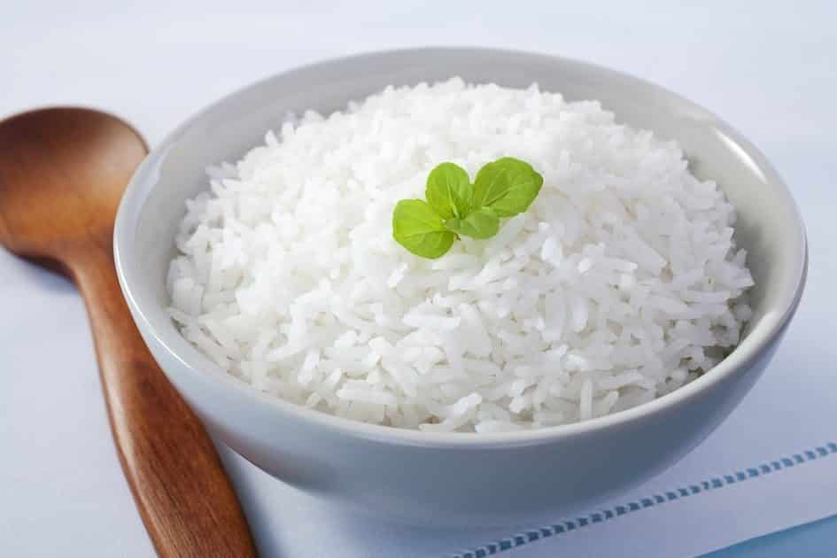

Na parboilização (foto), o arroz ainda em casca é mergulhado em água potável aquecida e, posteriormente, segue para a etapa de autoclave.
Nela, os grãos são vaporizados e, sob pressão, o amido presente neles incha (ou se gelatiniza). Dessa forma, o grão se torna amorfo, com um uma estrutura interior não tão sólida.
